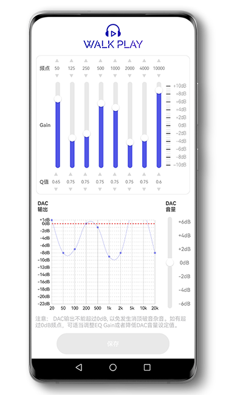

凌晨三点剪片时，我终于把那幅塞了半年的耳机救活了
用了半年的入耳式耳机高频刺耳、低频发虚，系统 EQ 怎么调都别扭。直到朋友让我试试直接调 DSP 芯片——Walk Play 实时试听加一键写芯片，半小时调出一个自己不想摘的声音。
凌晨三点的崩溃时刻
那是一个周三的凌晨。我在剪一个学校社团招新的视频，已经连续熬了三个晚上。电脑外放开着降噪，声音闷得像闷罐——毕竟隔壁室友已经睡了。于是我翻出那幅半年前攒生活费买的入耳式，插上 DAC，准备把最后三分钟的 BGM 混完。
戴上的瞬间我就皱了眉。
高频太亮了，歌手的齿音像一根根小针扎耳朵——我调了好几次系统自带的均衡器，把 6 kHz 往下拉了 4 dB，齿音没消多少，人声反而变得像蒙了一层纱布。再把低频往上推，鼓点倒是隆起来了，但 150 Hz 那段共鸣峰直接炸了，听久了头嗡嗡的。
我把耳机摘下来扔到桌上，盯着屏幕上的波形图发愣。这不是我第一次遇到这种情况——这款耳机的曲线我看过评测，高频有个天然尖峰、低频下限又不够，属于"开箱就能听但永远调不顺"的那种。系统 EQ 能拉曲线但救不了它，因为系统 EQ 是在 DAC 输出之后才介入，信号已经过了一轮模拟处理，动任何一刀都是在给已经炸掉的波形打补丁。
"你别调系统 EQ 了，"半夜三点微信还在线的朋友打过来，"你那幅耳机带 DSP 的吧？直接调芯片啊。"
从系统 EQ 到芯片调音：完全不同的世界
他说的就是 Walk Play。Walk Play 官网上的介绍写得很清楚。

Walk Play 不是那种装在手机里调完丢缓存的均衡器——它调的是耳机内置 DSP 芯片的寄存器。之前我以为这种东西只有发烧友才玩，直到朋友把链接甩过来让我试试，三分钟就从官方下载拿完 APK，插上 OTG 打开调音台，我才发现我之前半年都白调了系统 EQ。
界面很直白：左边一排频段滑条，Frequency 设频率、Gain 拉增益、Q 调带宽，上面几个滤波器模式可选，底部一个 Preamp 防削波，还有个大按钮叫"写入芯片"。最关键的是——所有调整实时生效。
我拖动 6 kHz 的滑条往下拉，从 0 到 -3 dB，耳机里歌手的齿音像被人一把揪掉了。不用保存、不用重启 DAC、不用换线，就一个手在屏幕上划，耳朵里的声音同步变化。我赶紧切到那首混了半小时的 BGM，找到之前最刺耳的那段人声——
继续拉，从 -3 到 -5 dB。齿音完全消失了，人声的自然感也没丢。我停了十秒，再切回旁通开关（Walk Play 界面自带的一键切换 EQ / 平直线），对比了两三次，确认这个调整就是我要的。
半小时调音实录：低频 + 高频，两个频段解决一半问题
搞定高频之后，我开始处理低频。那幅耳机的低频我之前一直觉得"不够"，但朋友让我先搞清楚到底是"下限不足"还是"膨胀过度"——这俩是两种完全相反的问题。
我放了一段动态范围大的 EDM，Walk Play 调到平直线。鼓点踩下去像敲空桶，落地后很快消失——低频下限不足，不是膨胀。好，那在 80 Hz 试试。
新建频段，Frequency 设 80 Hz（朋友说这是入耳式动圈最常用的低频提升点，低于 60 Hz 大多数耳机本身就到不了，提了也白提），Q 设 0.7 做宽频覆盖，Gain 从 0 慢慢往 +2、+3、+4 拉。每次拉一点我就停五秒，再切旁通对比——到 +3 dB 的时候，鼓点有了重量感但还没隆隆作响，就是这个点。
但这时总增益上去了——高频拉了 -5 dB 但低频加了 +3 dB，还有之前调的一些小频段，加起来总增益接近 +8 dB。Walk Play 的 DSP 安全总增益上限约 ±12 dB，再往上就会削波。我记得walkplay文档里说过，低频提升后一定要检查 Preamp，把它往负方向拉抵消掉多出来的增益。
我边播放边慢慢拉 Preamp 到 -2 dB，耳朵里传来的感觉很神奇：刺耳的削波声逐渐消失，但之前调好的低频重量感和高频顺滑度都还在。找到那个临界点——没有削波且整体音量不太低——就停手。
一键写芯片：调音不是存在手机里的缓存
调完之后最让我意外的是"写入芯片"这个按钮。
我之前用系统 EQ 调的所有东西，都存的是手机本地数据——换手机、卸 APP、清理缓存甚至重启手机，都可能丢。Walk Play 不一样，写入芯片就是把调好的参数直接烧录到耳机 DSP 的非易失性存储里，跟耳机走，跟我用什么手机什么播放器没关系。
写完之后我做了三个验证：重启手机、换了一根数据线、再把耳机插电脑上。调音一直在。我甚至把耳机借室友听了一会儿——他用自己的手机（和我完全不同的系统）打开 Walk Play 看了一眼，DAC 里的调音曲线就是我刚才写的，纹丝不动。
凌晨四点的复盘
现在那幅耳机在我桌上放着，插电脑用、插手机用、借人用，声音永远是那个我凌晨三点半小时调出来的状态——高频不炸、低频有重量、人声自然。之前我以为要换一副耳机才能解决的问题，其实就是调错了地方。
Walk Play 对我来说最大的意义可能不是调音本身，而是让我终于搞懂了一件事：耳机的声音不是出厂时盖棺定论的——DSP 芯片就在那儿，参数寄存器就在那儿，你只是之前没找到正确的调法而已。
如果你的耳机也有 DSP，也在抱怨高频刺耳、低频发虚、系统 EQ 怎么调都别扭，别忍了。找 Walk Play，晚上花半小时调一下，比什么都强。Walk Play 的中文资料在三个代码仓库里都能翻到——GitHub、Gitee、GitCode，维护的朋友更新得挺勤的。